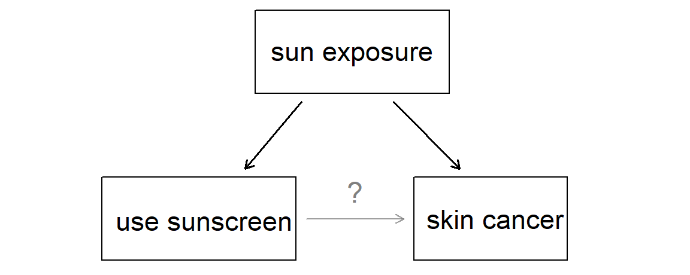

| patient | group | 30 days | 365 days |
|---|---|---|---|
| 1 | treatment | stroke | stroke |
| 2 | treatment | no event | no event |
| 3 | treatment | stroke | stroke |
| 4 | treatment | no event | no event |
| 5 | control | no event | no event |
Introduction to Data
STA 101 - Summer I 2022
Raphael Morsomme
Welcome
Announcements
- If you’re just joining the class, welcome! Go to the course website and review content you’ve missed, read the syllabus, and complete the Getting to know you survey.
Outline
- Motivating example - stent and stroke
- Principles of Statistical Inference
- Types of variable
- Experiments and observational studies
Motivating example - stent and stroke
Example - Stents and strokes
- Stents are known to reduce the risk of an additional heart attack or death after a cardiac event.
- Similar benefits for patients at risk of stroke? . . .
- If so, we can use this well-known procedure to reduce the risk of stroke
- If not, the procedure (surgery) should be avoided.
Does the use of stents reduce the risk of stroke?
- Experiment with 451 at-risk patients
- Each volunteer patient was randomly assigned to either the treatment (stent) or the control (no stent) group
- Check with patients 30 days and 365 days later
30 days |
365 days |
|||
|---|---|---|---|---|
| Group | Stroke | No event | Stroke | No event |
| Control | 13 | 214 | 28 | 199 |
| Treatment | 33 | 191 | 45 | 179 |
| Total | 46 | 405 | 73 | 378 |
- Contrary to expectation, we observe more strokes in the treatment group
- Do the data show a real difference between the groups?
Dealing with Randomness
Suppose I flip a coin \(100\) times and count the number of times I obtain heads.
- I expect to observe around \(50\) heads
- Imagine that I observe \(85\) heads. That would be alarming; the coin is probably not fair
- If I had observed \(55\) heads then I would not be alarmed; this is a plausible result with a fair coin
In the stent study, is the observed difference plausible if stents had no effect?
Intuition about randomness
Group exercise - gut feeling about randomness
- In the coin example, what number of heads would start to make you doubt that the coin is fair?
- In the stent study, is the difference large enough to make you doubt that the stents have no effect?
04:00
Principles of Statistical Inference
Observations and variables
| patient | group | 30 days | 365 days |
|---|---|---|---|
| 1 | treatment | no event | no event |
| 2 | treatment | no event | no event |
| 3 | control | no event | no event |
- Each row represents an observation
- Each column represents a variable
Some examples
Observational units: individuals, families, student cohort, cities, counties, countries, cells (biology), animals, books, courses, apples, etc
Variables: height, weight, age, size, year, latitude, longitude, type, sex, diet, number of pages, genre, level, color, etc
Population, census and sample
- Population of interest
- Large, but with well-defined limits
- Example: patients at risk of stroke, Duke students, trees in Duke Forest, US counties
- Want to investigate the relation between variables
- Census: collect data on the whole population
- typically impractical, expensive
- Sample: small fraction of the population
Statistical inference
- Population parameter, e.g. average number of hours Duke students sleep per night
- Greek letter: \(\mu\), \(\beta\), but also \(p\).
- Sample statistic, e.g. observed average number of hours Duke students sleep per night
- Roman letter: \(\bar{x}\), \(b\), \(\hat{p}\)
- How to learn about the population from a sample?
- from sample statistics to population parameters
- Statistical inference provides a rigorous framework
Group exercise - observation and variables
- Consider a study that investigate the effect of diet on sleep among students at Duke. What is the population? What is the observational unit? Give three variables that you would measure.
- Exercise 1.13 a
- Exercise 2.7
- Give an example of a dataset in your field. What is the population? What are the observational units? What variables are measured?
06:00
Statistics as an art – sampling
- There is no need to drink the whole pot (population) to know if the soup is seasoned enough
- Tasting a spoonful (sample) is typically sufficient
- Such sample is representative of the population

Group exercise - sampling
Back to the study on the effect of diet on sleep among Duke students. How would you obtain a sample of student for your study if you had (i) 1 hour, (ii) 1 week?
02:00
What can go wrong?
- small sample
- convenience sampling, e.g. students on campus
- blind spots, e.g. voters with no phone
- …
The gold standard is a random sample
- but even then, we can have non-response bias
🛑 Obtaining a representative sample is difficult.
✅ But surprisingly small samples can do the job!
- e.g. 1,500 for a whole country (later in class)
Sampling is natural
- When you taste a spoonful of soup and decide the spoonful you tasted isn’t salty enough, that’s exploratory analysis
- If you generalize and conclude that your entire soup needs salt, that’s an inference
- For your inference to be valid, the spoonful you tasted (the sample) needs to be representative of the entire pot (the population)
Types of variable
Numerical variables
- Takes a numerical value
- Examples: age, height, number of children
- Not all numbers are numerical variables, e.g. zip code, phone number
- Heuristic: is the average meaningful? Yes
- Discrete, or continuous; not always clear cut
Categorical variables
- Takes a level (a category)
- Examples: eye color, place of birth, education level
- May be numbers, e.g. zip code, phone number
- Heuristic: is the average meaningful? No
- Ordinal, or nominal
Breakdown of variables into their respective types.
Group exercise - types of variables
- Exercise 1.13 b
- Consider the dataset you proposed in point 3 of the previous group exercise. Can you identify a numerical and a categorical variable? What are they?
- Does you dataset contain a variable of each of the four types? Can you come up with a variable of each type?
04:00
Experiments and observational studies
Relationship between variables
Two variables can either be independent or associated.
Association can be linear (positive, or negative) but it can take any form.
Group exercise - types of associations
- Provide two numerical variables that are likely to be linearly associated. Is the association positive or negative?
- Provide two numerical variable that are likely to be associated in a non linear way e.g. U-shape, inverted-J-shape (like a square root).
03:00
Explanatory and response variable
- When two variables are associated, we sometimes hypothesize that changes in one result in changes in the other.
- Explanatory variable \(\Rightarrow\) response variable
- …but association \(\neq\) causation; examples:
- fire, damage and firemen; ice-cream and shark attack
- counties and kidney cancer death rate; the best classrooms are small classrooms.
Group exercise - counties and kidney cancer death rate
Why are most of the shaded counties in the middle of the country?
03:00


Source: Bayesian Data Analysis
Experiments
- The value of the explanatory variable is assigned by the researcher
- Randomized experiment: the value of the explanatory variable is randomly assigned
- removes any counfounding (luking) variable
- Blind, or even double-blind, to avoid biases
- placebo
- can go wrong, e.g. vitamins in prison
✅ Experiments lead to causal claims; gold standard
But experiments are not always applicable:
- not all variables can be assigned, e.g. age
- ethical considerations, e.g. smoking cigarette, sham surgery (placebo)
- practical consideration, e.g. red meat consumption
Observational Studies
- The value of the explanatory variable is not assigned by the researcher
- there is no interference
- Example: survey
🛑 Does not easily lead to causal claims due to the potential presence of counfounding variables

Source: IMS
…but they can do so, e.g. smoking causes cancer.
Group exercise - experiment and observational study
You want to investigate the effect of caffeine on class participation among students at Duke
- Design an observational study.
- Design an experiment.
- Is your experiment double-blind? Can you make it double-blind?
- Any ethical or practical concern with the experiment?
Provide an example of an observational study that you would not turn into an experiment due to:
- practical considerations
- ethical considerations
Exercise 2.12
08:00
Recap
Recap
- observations (row) and variables (column)
- population parameters and sample statistics
- statistical inference
- sampling
- four types of variables
- numerical: continuous, discrete
- categorical: nominal, ordinal
- experiments, observational studies and causal claims